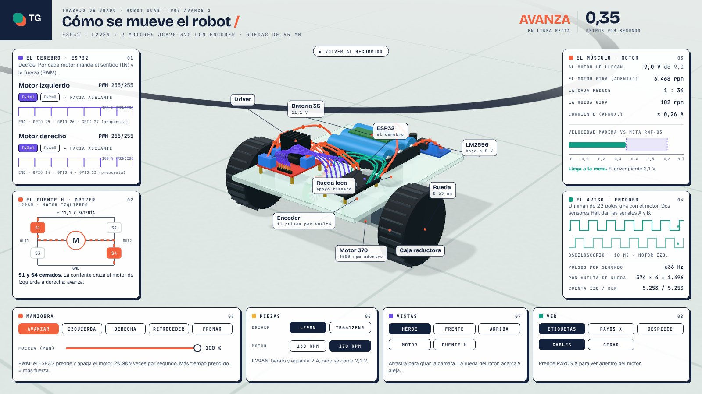
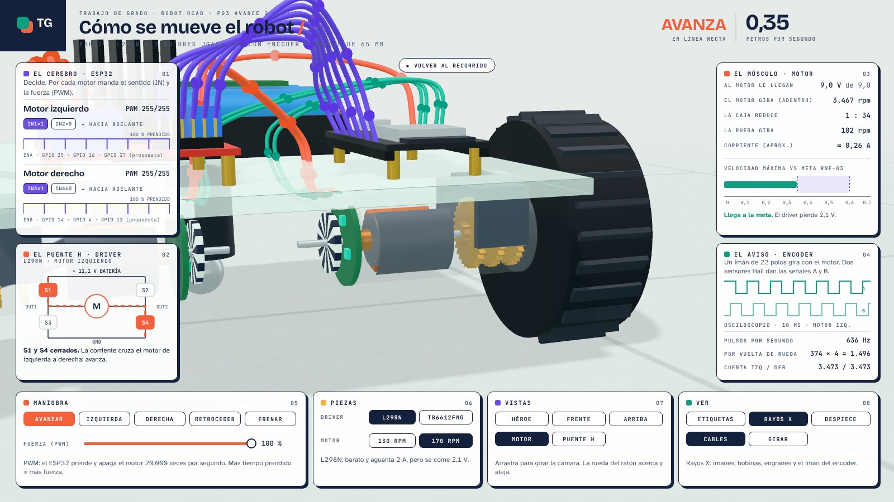
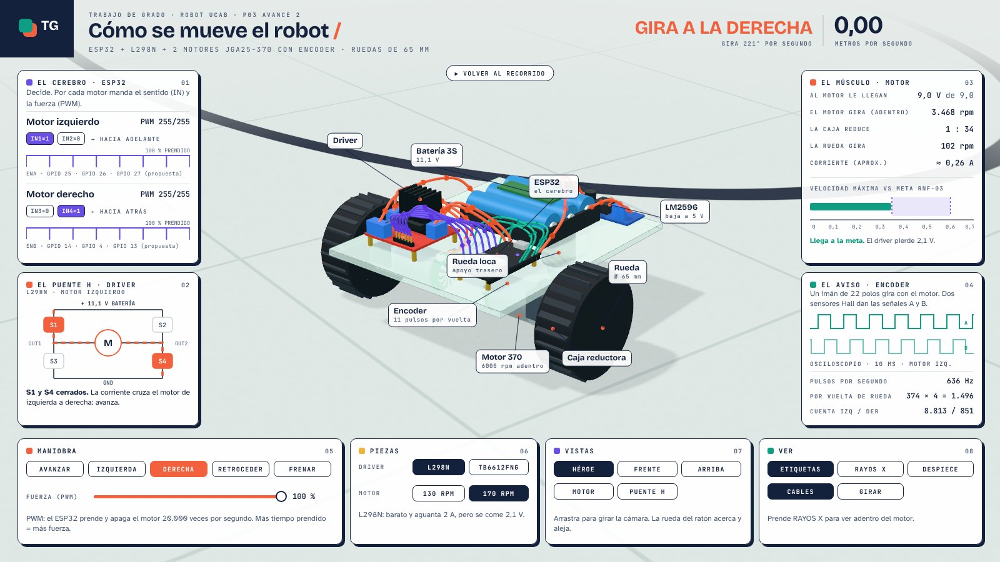
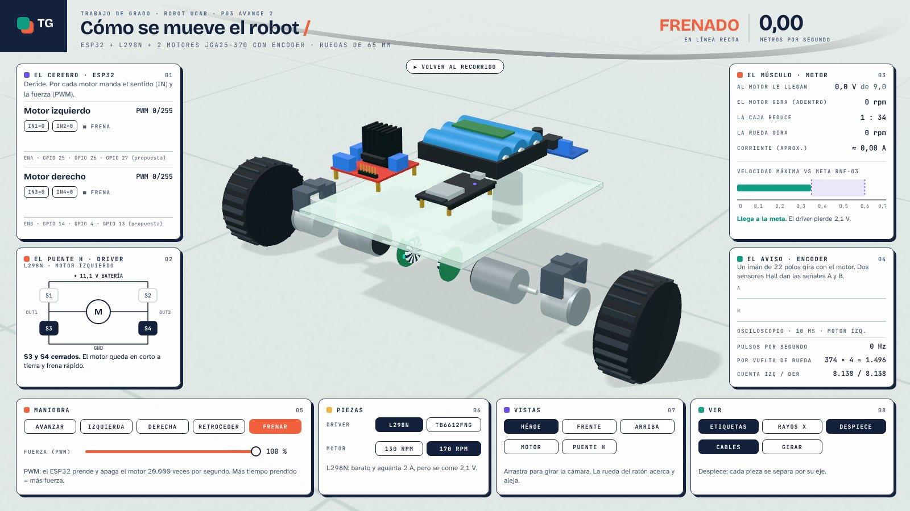

Prototipo P03 · Avance 2 · Simulador 3D
Cómo se mueve el robot, pieza por pieza
El ESP32 manda órdenes, el puente H las convierte en fuerza, la caja la reduce y el encoder avisa cuánto giró la rueda. Aquí se ve todo eso a la vez.

Abrir el simulador ▶Funciona sin internet, en una sola página. Mejor en computadora. En teléfono, gíralo de lado.
Cómo usarlo
Si no lo tocas, hace un recorrido solo. Al tocar cualquier cosa, lo manejas tú.
- Elige una maniobraAvanzar, girar, retroceder o frenar. También con las flechas ↑ ↓ ← →.
- Mueve la fuerzaLa barra de PWM. Mira cómo cambian el voltaje, las rpm y la velocidad.
- Cambia las piezasL298N o TB6612FNG, motor de 130 o 170 rpm. La barra de la meta dice si llega.
- Mira por dentroVista MOTOR con RAYOS X: imanes, engranes y el imán del encoder.
Lo que se aprende
Sentido y fuerza
Por cada motor, dos pines dicen el sentido (IN) y uno la fuerza (PWM). El ESP32 prende y apaga el motor 20 000 veces por segundo.
Cuatro interruptores
Cerrando S1 y S4 la corriente cruza el motor en un sentido; con S2 y S3, en el otro. Con S3 y S4 frena.
La caja reduce
Adentro el motor gira a unas 3 500 rpm. La caja 1:34 lo baja a unas 100 rpm en la rueda, con más fuerza.
El encoder cuenta
11 pulsos por vuelta del motor × 34 = 374 por vuelta de rueda. Con las dos señales A y B salen 1 496 cuentas y el sentido.
De dónde salen los números
Todo lo que se ve sale de una sola fórmula, la misma del avance 1 en Colab.
| Dato | Valor |
|---|---|
| Batería 3S nominal | 11,1 V |
| Caída del driver | L298N 2,1 V · TB6612FNG 0,5 V |
| Motor 370 sin caja, 12 V | 6 000 rpm |
| Caja (versión 170 rpm / 130 rpm) | 1:34 / 1:46 |
| Peso del robot (supuesto) | 80 % de la velocidad sin carga |
| Encoder | 11 pulsos por vuelta del motor, canales A y B |
| Rueda y distancia entre ruedas | Ø 65 mm · 180 mm |
| Resultado con L298N, 170 rpm, PWM 100 % | 9,0 V · 102 rpm · 0,35 m/s · 636 Hz |
La corriente es aproximada (0,1 A sin carga, 1,2 A bloqueado a 12 V). Los pines son una propuesta: se confirman con el mapa de pines de la Fase II.
Evidencias
Capturas del simulador. Toca una para verla grande.



Lo que el simulador no sabe
Usa números del fabricante y un supuesto de peso. No sabe cuánto pesa de verdad el robot, cómo patinan las ruedas ni cuánto cambia la batería al descargarse.
Por eso P03, en la semana 6, mide con el encoder real y reemplaza el 80 % supuesto por el valor medido.
El código
- model.js: las fórmulas (voltaje, rpm, velocidad, encoder).
- robot.js: el robot en 3D, en metros reales.
- console.js y live.js: los paneles, los botones y el recorrido.
- stage.js: luz, sombras y el piso del laboratorio.
Hecho con el kit teardown (licencia MIT, ver LICENSE) y three.js. Para reconstruirlo: node sims/build.mjs ./robot-traccion desde la carpeta del kit.